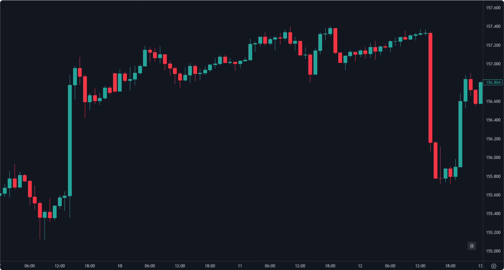

La première devise de la paire. Dans EUR/USD, c'est l'euro (EUR).
La deuxième devise, servant de référence. Dans EUR/USD, c'est le dollar (USD). Le taux indique combien d'unités de la devise cotée sont nécessaires pour acheter 1 unité de la base.
Utilisation du capital emprunté pour amplifier la taille des positions. Un trader avec 1 000 $ et un levier 100:1 peut contrôler une position de 100 000 $.
100 000 $ requis
1 000 $ requis
Dépôt ou avance conservé par le courtier. Elle garantit que le trader dispose de fonds suffisants pour couvrir les pertes potentielles sur ses positions ouvertes.


Exécute le trade au meilleur prix disponible immédiatement. Le trader accepte le prix du marché au moment exact de l'ordre — aucun délai.
Ordre placé à un prix plus favorable que le prix actuel :
- 🟢 Pour un Long : placé en dessous du prix actuel
- 🔴 Pour un Short : placé au-dessus du prix actuel
Utilisé quand on anticipe la poursuite du mouvement actuel. Une fois déclenché, agit comme un ordre au marché (sujet au slippage).
- 🟢 Long : placé au-dessus du prix actuel
- 🔴 Short : placé en dessous du prix actuel
Combinaison Stop + Limit. Résout le problème du slippage en déclenchant un prix Limit quand le niveau Stop est atteint. C'est le "pire prix" acceptable.


Les chandeliers donnent une représentation visuelle complète des fluctuations de prix. Chaque chandelier affiche 4 données clés sur une période donnée.
Degré d'instabilité du prix d'un actif. Elle reflète l'incertitude et le risque d'un investissement. Plus la volatilité est haute, plus la plage de fluctuation est large.



Une tendance haussière est caractérisée par des plus hauts croissants (Higher Highs — HH) et des plus bas croissants (Higher Lows — HL). Le prix monte progressivement en formant des vagues ascendantes.
- Chaque sommet est plus haut que le précédent (HH)
- Chaque creux est plus haut que le précédent (HL)
- Le prix monte en formant des vagues ascendantes
Un Swing Low se forme lorsque la 2e bougie atteint un creux, tandis que la 1re et la 3e bougie restent au-dessus. En uptrend, c'est une zone de rebond — une opportunité d'achat.
Un Swing High se forme lorsque la 2e bougie atteint un sommet, tandis que la 1re et la 3e bougie restent en dessous. En downtrend, c'est une zone de résistance — une opportunité de vente.


La tendance baissière est caractérisée par des plus bas décroissants (Lower Lows — LL) et des plus hauts décroissants (Lower Highs — LH). Le prix descend progressivement en créant des vagues descendantes.
On recherche des rallyes de court terme qui créent des Swing Highs. Ces niveaux offrent des opportunités de vente (Sell) pour profiter de la continuation baissière.
Si nous sommes en uptrend et que le dernier Swing Low — celui qui précède le plus haut absolu — est cassé à la baisse, on peut envisager un changement de tendance ou au moins une pause significative.
En downtrend, si le dernier Swing High — celui qui précède le plus bas absolu — est cassé à la hausse, on peut rechercher des opportunités d'achat ou anticiper un ralentissement.


Sur un marché tendanciel, des indicateurs techniques nous aident à suivre le mouvement et à construire des stratégies de trend-following efficaces.
Dans un marché en range, le prix rebondit entre des niveaux définis. Le haut du range agit comme résistance (le prix y est repoussé à la baisse) et le bas du range agit comme support (le prix y rebondit à la hausse).
Les marchés en range sont également appelés marchés latéraux (sideways) ou marchés sans tendance (bracketing). Le prix manque de direction claire et consolidate entre deux zones de prix.